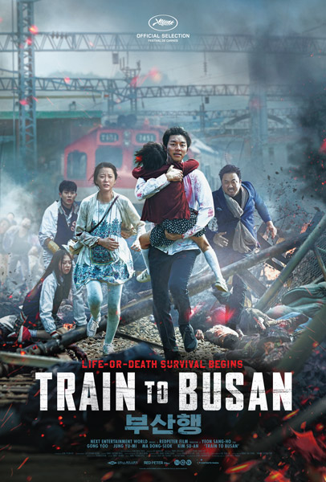

A chemical leak at a biotech plant causes the start of a zombie apocalypse that rapidly spreads across South Korea.
Fund manager Seo Seok-woo is a cynical workaholic and divorced father. His young daughter Su-an wants to spend her birthday with her mom in Busan. He tries to soothe her with the gift of a Wii, forgetting that she already has one. He watches a video of Su-an suffering from stage fright while singing "Aloha 'Oe" at a school recital he could not attend. Overcome with guilt, he decides to take her to Busan via an early KTX 101 train from Seoul Station. Other passengers include working-class man Yoon Sang-hwa and his pregnant wife Seong-kyeong; selfish COO Yon-suk; a high school baseball team that includes baseball player Min Yong-guk and his girlfriend cheerleader Kim Jin-hee; train attendant Ki-chul; elderly sisters In-gil & Jong-gil; and a homeless stowaway.
As the train departs, an infected woman runs aboard, unnoticed, just before the doors close. She soon turns into a zombie, attacks an attendant, and many crew and passengers are quickly turned into zombies. The remaining passengers secure themselves in the front and rear cars, observing that the infected zombies only attack if they can see them or hear them, but they cannot operate the train's doors. They learn from news reports of the rapidly-spreading epidemic across the country, and Seok-woo discovers the biotech plant was connected to his business. He uses his connections to try to secure safe travels for Su-an and himself.